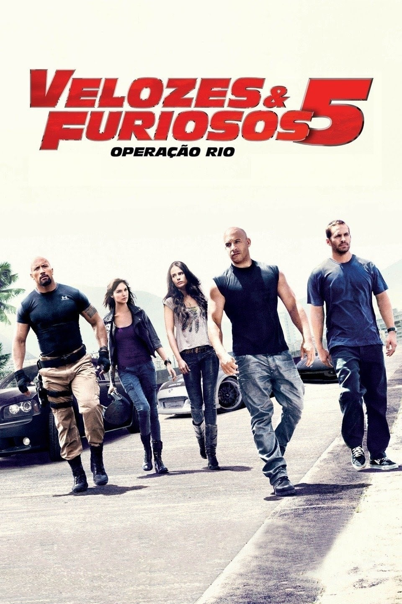
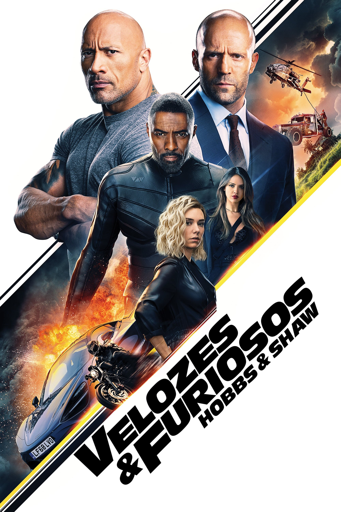

Sem Vin Diesel... Quando começou a trabalhar em uma sequência para Velozes e Furiosos a Universal Pictures encomendou dois roteiros para o novo filme, um com o personagem de Vin Diesel e outro sem o personagem. O ator resolveu não participar de + Velozes + Furiosos por considerar que o final do primeiro filme não permitia um retorno lógico de seu personagem à trama